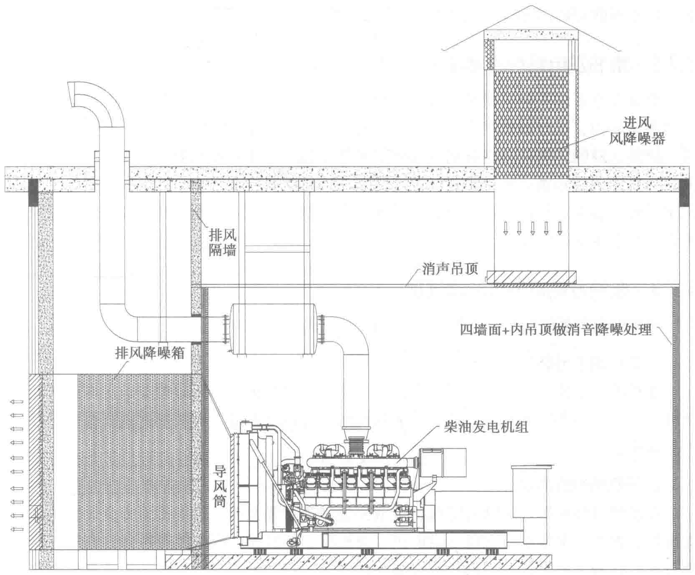

5.7 发电机组设备安装、调试及测试验收
柴油发电机组属于重型设备，在移动和安装过程中都需要由专业的施工队伍进行。正确的安装调试是确保柴油发电机组能够长期安全、可靠、稳定工作的基础。机组的安装调试与使用是否规范以及施工工艺水平的高低，对机组的运行状态、修整间隔期和使用寿命都会产生重大影响。
5.7.1 柴油发电系统的安装内容
安装内容包括但不限于：供储油管路预埋施工，安装起吊用具，准备机组基础水平吊线，机组减震装置定位及安装，发电机组安装就位，冷却系统安装，日用油箱及储油罐安装就位，接地系统制作，通风散热、排烟排气管的连接及吊装，减震、隔热、降噪、燃油箱的接口连接，机组油口高度、阻火器、供油泵和倒油泵安装等。还有配套电气柜、控制